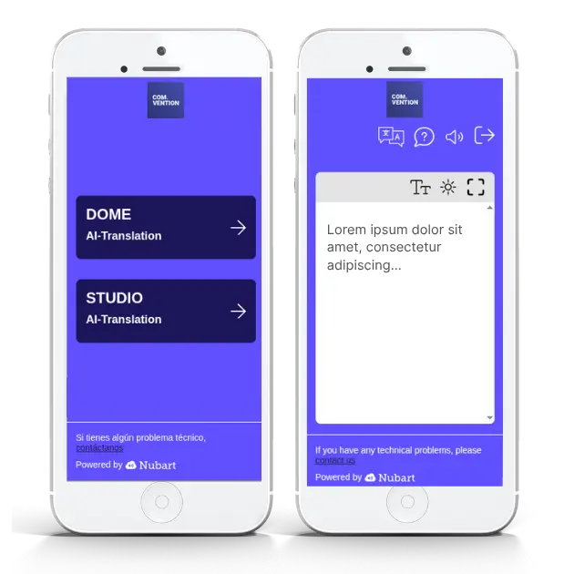
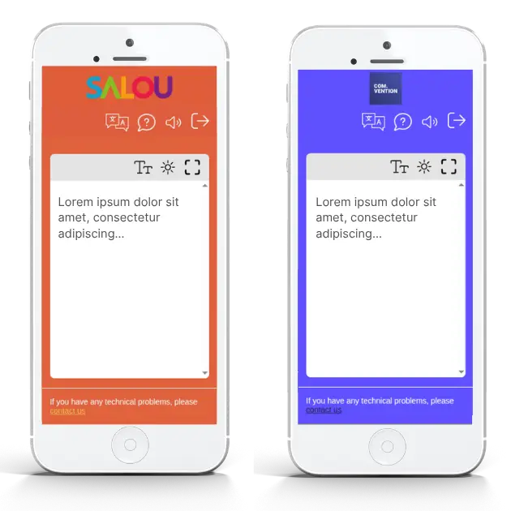

Rosa Sala
CEO, Nubart
מה מבדיל את Nubart TRANSLATE מספקים אחרים של תרגום סימולטני מבוסס AI?
פלטפורמות לתרגום סימולטני מבוסס AI נראות לעיתים קרובות דומות במבט ראשון: תרגום בזמן אמת, שפות רבות, גישה דרך הדפדפן, עמידה ב-GDPR. ההבדלים האמיתיים מתגלים באופן שבו הן פועלות במהלך אירוע חי.
Nubart TRANSLATE היא פלטפורמה לתרגום סימולטני מבוסס AI, הפועלת בדפדפן, לאירועים פרונטליים והיברידיים. המאמר מסביר מה מבדיל אותה מרוב הספקים האחרים: הגדרת הדוברים, תמחור, גישת המאזינים, עיבוד נתונים ופריסה בשטח. אלה הפרטים המעשיים שמארגני אירועים, צוותי IT ואנשי ציות (compliance) בוחנים בדרך כלל לפני שהם בוחרים פלטפורמה.
במבט אחד
| מאפיין | Nubart TRANSLATE |
|---|---|
| המחיר עולה בהתאם לגודל הקהל? | לא. אותו מחיר ל-20 או ל-2,000 מאזינים |
| המחיר עולה בהתאם למספר השפות? | לא. אותו מחיר ל-2 או ל-35+ שפות |
| נדרשת הורדת אפליקציה? | לא. פועלת ישירות בדפדפן |
| ניתן להשתמש בקוד ה-QR שוב באירועים עתידיים? | כן |
| קוד אחד מכסה כמה אולמות במקביל? | כן |
| אפשרות לגישה הקשורה למכשיר אחד עבור אירועים חסויים? | כן |
| עיבוד בתשתית באיחוד האירופי (לרוב השפות הנתמכות)? | כן. בעברית, הקול הסינתטי מופק מחוץ לאיחוד האירופי |
| ניסיון חינם בשירות עצמי? | כן. 30 דקות, ללא שיחת מכירה |
| מיתוג מותאם אישית (לוגו וצבעים) כלול ללא עלות נוספת? | כן. מוטמע על ידי הצוות שלנו תוך כ-3 ימי עסקים, ללא תוספת |
| מכינה את מינוח האירוע מתוך המסמכים שלכם? | כן, מוכן על ידי הצוות שלנו מתוך המסמכים שלכם. בלי לבנות מילון מונחים |
נסו בעצמכם לפני שתמשיכו לקרוא
Nubart TRANSLATE מציעה ניסיון חינם של 30 דקות בתנאים אמיתיים, ללא צורך בשיחת מכירה, ואת 30 הדקות הללו ניתן לפצל לכמה הפעלות שתרצו, על פני כמה ימים שיידרשו. הדברים היחידים שחסרים בניסיון החינמי הם המיתוג והפריסה העיצובית שלכם, והכנת המינוח שאנחנו עושים בדרך כלל מראש מתוך חומרי האירוע; שניהם כלולים בניסיון המוכן. כל השאר עובד בדיוק כפי שיעבוד ביום האירוע שלכם. מי שרוצה לבדוק עם AI מוכן לפני ההזמנה יכול להזמין את הניסיון המוכן, הכולל AI מוכן ואת הלוגו והצבעים שלכם, ב-150 אירו (לא כולל מע"מ). ברגע שההכנה מוכנה, עומדות לרשותכם 30 דקות שימוש; דקות ניסיון חינם שטרם ניצלתם נכללות ב-30 הדקות הללו ואינן מתווספות אליהן. סבב תיקונים אחד כלול: אחרי הבדיקה, שלחו לנו רשימה של מונחים שיש לזהות או לתרגם טוב יותר, ואנחנו נעדכן את ההכנה.
1. המחיר לא תלוי בגודל הקהל
Nubart TRANSLATE מחייבת לפי זמן הפעילות של זרם התרגום, ולא לפי מספר המאזינים. מחשבון המחירים באתר שלנו מאפשר ללקוחות לבדוק מראש את העלות הצפויה לאירוע שלהם לפני ההזמנה, בלי צורך בהצעת מחיר מותאמת אישית.
2. אירועים חסויים נשארים חסויים
ברוב מערכות הגישה למאזינים, כולל קוד QR רגיל, קל לשתף את הגישה: כל אחד יכול להעביר את הקישור הלאה, ומושב חסוי עלול להגיע לאנשים שמעולם לא נועדו להשתתף בו. עבור ישיבות דירקטוריון, תדריכי משקיעים ואירועים רגישים אחרים, Nubart TRANSLATE מציעה כאפשרות קוד QR שאינו ניתן להעברה: קוד שנקשר למכשיר הראשון שמפעיל אותו, כך שקישור שהועבר הלאה לא ייפתח במכשיר שני, ללא כל רישום אישי. אנו מרחיבים על אופן הפעולה של מנגנון זה במאמר נפרד (באנגלית).
3. תשתית אירופית כברירת מחדל
Nubart TRANSLATE נבנתה ומופעלת על ידי חברות שהמטה שלהן באיחוד האירופי, ושרשרת העיבוד המרכזית, הכוללת זיהוי דיבור, תרגום וקול סינתטי, פועלת כברירת מחדל על תשתית באיחוד האירופי עבור הרוב המכריע של השפות הנתמכות. בעברית יש חריג: הקול הסינתטי העברי מופק אצל ספק קול מחוץ לאיחוד האירופי. הלקוחות בוחרים גם את מדיניות שמירת הנתונים שלהם לכל אירוע: מחיקה מיידית, 30 יום, או שמירה ללא הגבלת זמן עם שימוש המוגבל בחוזה. מטה באירופה אינו זהה לעיבוד נתונים בתוך האיחוד האירופי, וזו השאלה הקונקרטית יותר עבור צוותים עם דרישות רכש או ציות מחמירות.
4. קוד QR אחד לכל אירוע
קוד ה-QR למאזינים משויך לחשבון הלקוח ולא נוצר מחדש לכל אירוע. אותו קוד עובד שוב באירוע הבא, שנה אחרי שנה, בלי להדפיס או להפיץ שום דבר מחדש. לא פחות חשוב: ללקוחות יש תמיד רק קוד QR אחד למאזינים לנהל, מה שמפחית את הסיכון להציג או להפיץ קוד שגוי במהלך אירוע חי. בכנס מרובה אולמות, למשל, אין שום אפשרות להציב בטעות את קוד ה-QR של אולם א' מחוץ לאולם ב'. פלטפורמות מתחרות רבות יוצרות במקום זאת קוד QR חדש וייעודי לכל אירוע.
5. מותאמת לכל מבנה של אירוע
אותו ממשק למאזינים מסתגל אוטומטית כשהאירוע שלכם משתנה. אירוע אחד עשוי להתקיים באולם בודד, והבא אחריו בחמישה מושבים מקבילים. Nubart TRANSLATE פשוט מציגה כפתור אחד לכל אולם בתוך הממשק הקיים, בלי שהמשתתפים יצטרכו ללמוד שום דבר חדש.
גם הגדרת הדוברים גמישה באותה מידה. אירוע פשוט יכול לפעול עם חשבון דובר יחיד. אם באירוע עתידי יש כמה דוברים, או דוברים שעוברים בין שפות, אפשר פשוט ליצור כמה חשבונות דובר שצריך, או להשתמש בחשבון משותף אחד ולהחליף את שפת הדיבור בכל עת שיידרש. הלקוחות יכולים ליצור את חשבונות הדוברים בעצמם בכל רגע, והצוות של Nubart תמיד שמח לייעץ לגבי המערך המתאים ביותר לכל אירוע.
פלטפורמות רבות אחרות, לעומת זאת, קושרות כל מושב לתצורה קבועה, מה שמקשה על ההתאמה כשדרישות האירוע משתנות.

6. הלוגו והצבעים שלכם, כלולים כברירת מחדל
מיתוג ממשק המאזינים בלוגו ובצבעים של האירוע כלול ללא עלות נוספת ב-Nubart TRANSLATE. בקרב הספקים שבדקנו, הדבר אינו שכיח: היכן שמתחרים מציעים מיתוג של הממשק בכלל, הוא זמין בדרך כלל רק כשירות מקצועי בתשלום ולא כחלק מהמוצר הסטנדרטי.
אינכם צריכים להגדיר שום דבר בעצמכם: שלחו לנו את הלוגו והצבעים שלכם בעת ההזמנה, והצוות שלנו יטמיע אותם בממשק המאזינים שלכם, בדרך כלל תוך כ-3 ימי עסקים. אם לא תשלחו, נשתמש במיתוג מהאתר שלכם או מדף האירוע.

7. בלי לבנות מילון מונחים, רק המסמכים שלכם
Nubart TRANSLATE מוכנה לאירוע שלכם מתוך המסמכים שכבר יש לכם. פשוט העלו את המצגת, התסריט, קובץ ה-PDF, הערות הדוברים או חומרי אירוע אחרים לאזור הלקוח המוגן בסיסמה שלכם. ה-AI מכין טיוטה של ההכנה ומזהה מינוח, שמות מוצרים, מותגים ואוצר מילים טכני, והצוות שלנו בודק ומשפר אותה ידנית. אנחנו מכינים בנפרד את זיהוי הדיבור ואת מנוע התרגום, לכל שפה שמדברים בה על הבמה. אין שום צורך לבנות מילון מונחים מאפס.
גיליון אלקטרוני נדרש רק בשני מקרים מיוחדים: אם מונחים מסוימים חייבים להיות מתורגמים תמיד בדרך מסוימת, או אם שמות מסוימים אסור לתרגם כלל. כל השאר מגיע ישירות ממסמכי האירוע שלכם.
אם עבדתם בעבר עם מתורגמנים אנושיים, התהליך דומה מאוד: אותם מסמכים שהייתם נותנים להם כדי להתכונן לאירוע הם המסמכים ש-Nubart TRANSLATE משתמשת בהם כדי להכין את המינוח שלה.
פלטפורמות מתחרות רבות מצפות במקום זאת שהלקוחות ירכיבו ויתחזקו רשימות מונחים באופן ידני, לעיתים קרובות דרך כלי ייעודי למילוני מונחים.
איכות התרגום היא רק חלק אחד בבחירת פלטפורמה לתרגום סימולטני מבוסס AI. תמחור, גישת המאזינים, תהליכי העבודה של הדוברים והמיקום שבו הנתונים מעובדים משפיעים לעיתים קרובות באותה מידה על מידת החלקות שבה אירוע מתנהל בפועל. Nubart TRANSLATE תוכננה סביב הפרטים התפעוליים הללו, ולא רק סביב דיוק התרגום.
יש לכם מערך מסוים בראש? צרו איתנו קשר ונעזור לכם לגבש את התצורה הנכונה לאירוע שלכם.